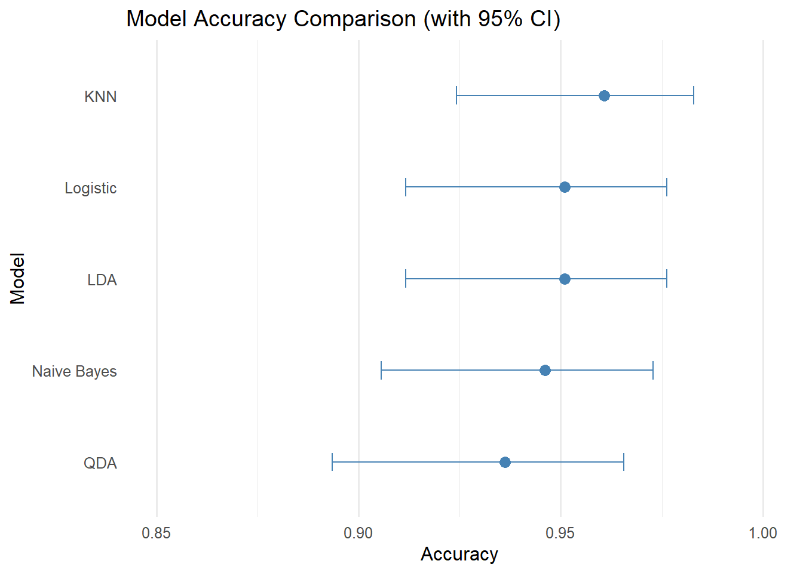

This blog post walks through a practical exercise in building and evaluating machine learning classification models using R. We’ll use the well-known Breast Cancer Wisconsin (Original) dataset from the UCI Machine Learning Repository to classify tumors as either benign (non-cancerous) or malignant (cancerous) based on microscopic characteristics of cell nuclei.
We will cover the following steps:
Loading and exploring the dataset.
Preprocessing the data (handling missing values, encoding variables).
Analyzing feature relationships and addressing collinearity.
Splitting the dataset into training and testing sets.
Training various classification algorithms (Logistic Regression, KNN, LDA, QDA, Naive Bayes).
Evaluating model performance using metrics such as accuracy, AUC-ROC, and precision-recall curves.
Let’s dive in!
Exploratory Analysis and Preprocessing
Before building any models, understanding and preparing the data is essential. This involves inspecting the data structure, identifying and handling missing values, correcting data types, and exploring relationships between variables.
Understanding the Data Source
The first step is always to consult the dataset’s documentation. It provides vital information about the variables, their meaning, potential issues like missing value codes, and the number of instances. For this dataset, the documentation tells us about the features measured from digitized images of fine needle aspirates (FNAs) of breast masses.
Importing the Dataset
We load the data, which is provided as a comma-separated file without headers. Based on the documentation, we assign meaningful column names
# Define the path to the datasetpath <-"dataset/breast-cancer-wisconsin.data"# Read the data using read.table as it's a simple CSV without headersdata <-read.table(path, sep =",")# Assign column names based on the dataset documentationcolnames(data) <-c("Sample_code_number", "Clump_thickness","Uniformity_of_cell_size", "Uniformity_of_cell_shape","Marginal_adhesion", "Single_epithelial_cell_size","Bare_nuclei", "Bland_chromatin", "Normal_nucleoli", "Mitoses", "Class")# Display the structure of the datastr(data)
The documentation reveals that missing values are coded as "?". We need to replace these with R’s standard NA representation. We also need to handle variables encoded incorrectly
# Replace "?" with NAdata[data =="?"] <-NA# Check how many missing values per columncolSums(is.na(data))
# For simplicity in this example, we remove rows with any missing values.# In a real-world scenario, imputation might be considered.data <-na.omit(data)cat("Dimensions after removing NAs:", dim(data), "\n")
Dimensions after removing NAs: 683 11
# The 'Sample_code_number' is an identifier and not useful for classification.data$Sample_code_number <-NULL# The 'Class' variable is coded as 2 for benign and 4 for malignant.# Convert it to a factor with meaningful labels.data$Class <-factor(ifelse(data$Class ==2, "benign", "malignant"),levels =c("benign", "malignant")) # Explicitly set levels# The 'Bare_nuclei' column was read as character due to the "?" values.# Now that NAs are handled, convert it to integer.data$Bare_nuclei <-as.integer(data$Bare_nuclei)# Verify the structure againstr(data)
# Check the distribution of the target variablesummary(data$Class)
benign malignant
444 239
Tip
Always check the documentation! As seen here, understanding how missing values ("?") and the target variable (Class) were encoded was crucial for correct preprocessing. Failing to do this can lead to errors or incorrect model results.
Exploring Variable Distributions and Relationships
Let’s examine the predictor variables. Since they are all numerical (ratings from 1-10), we can look at their distributions and correlations.
# Summary statistics for numerical predictorssummary(data[, -which(names(data) =="Class")]) # Exclude the Class variable
Clump_thickness Uniformity_of_cell_size Uniformity_of_cell_shape
Min. : 1.000 Min. : 1.000 Min. : 1.000
1st Qu.: 2.000 1st Qu.: 1.000 1st Qu.: 1.000
Median : 4.000 Median : 1.000 Median : 1.000
Mean : 4.442 Mean : 3.151 Mean : 3.215
3rd Qu.: 6.000 3rd Qu.: 5.000 3rd Qu.: 5.000
Max. :10.000 Max. :10.000 Max. :10.000
Marginal_adhesion Single_epithelial_cell_size Bare_nuclei
Min. : 1.00 Min. : 1.000 Min. : 1.000
1st Qu.: 1.00 1st Qu.: 2.000 1st Qu.: 1.000
Median : 1.00 Median : 2.000 Median : 1.000
Mean : 2.83 Mean : 3.234 Mean : 3.545
3rd Qu.: 4.00 3rd Qu.: 4.000 3rd Qu.: 6.000
Max. :10.00 Max. :10.000 Max. :10.000
Bland_chromatin Normal_nucleoli Mitoses
Min. : 1.000 Min. : 1.00 Min. : 1.000
1st Qu.: 2.000 1st Qu.: 1.00 1st Qu.: 1.000
Median : 3.000 Median : 1.00 Median : 1.000
Mean : 3.445 Mean : 2.87 Mean : 1.603
3rd Qu.: 5.000 3rd Qu.: 4.00 3rd Qu.: 1.000
Max. :10.000 Max. :10.00 Max. :10.000
# Visualize distributions data %>%select(-Class) %>%pivot_longer(everything(), names_to ="variable", values_to ="value") %>%ggplot(aes(x = value)) +geom_histogram(binwidth =1, fill ="skyblue", color ="black") +facet_wrap(~variable, scales ="free_y") +labs(title ="Distribution of Predictor Variables", x ="Value (1-10)", y ="Frequency") +theme_minimal()
# Analyze correlations among continuous variables# Select only numeric predictors for correlation analysisnumeric_predictors <- data %>%select(-Class) %>%names()data_corr <-cor(data[, numeric_predictors])# Visualize the correlation matrixcorrplot(data_corr, method ="circle", type ="upper", tl.col ="black", tl.srt =45, order ="hclust")
# Use pairs.panels for scatter plots and correlation values (optional, can be busy)# pairs.panels(data[, numeric_predictors], cex.labels = 0.7, ellipses = FALSE, lm=TRUE)
We observe strong positive correlations between several variables, particularly Uniformity_of_cell_size and Uniformity_of_cell_shape (correlation coefficient often > 0.9). High collinearity can sometimes destabilize model coefficients (especially in linear models) and make interpretation harder.
A common strategy is to remove one of the highly correlated variables. Let’s remove Uniformity_of_cell_shape as it’s highly correlated with Uniformity_of_cell_size.
# Remove 'Uniformity_of_cell_shape' due to high correlation with 'Uniformity_of_cell_size'data$Uniformity_of_cell_shape <-NULL# Check the structure againstr(data)
Class imbalance occurs when one class is much more frequent than the other. This can bias models towards the majority class. Let’s check our target variable Class.
# Calculate class proportionsimbalance_summary <- data |>count(Class) |>mutate(Percentage =round((n /sum(n)) *100, 1)) # Use sum(n) instead of nrow(data) just in caseprint(imbalance_summary)
Class n Percentage
1 benign 444 65
2 malignant 239 35
# Visualize class distributionggplot(imbalance_summary, aes(x = Class, y = n, fill = Class)) +geom_bar(stat ="identity") +geom_text(aes(label =paste0(n, "\n(", Percentage, "%)"))) +labs(title ="Distribution of Target Variable (Class)", x ="Tumor Class", y ="Number of Samples") +theme_minimal() +scale_fill_brewer(palette ="Paired")
The dataset shows a moderate imbalance: approximately 65% benign and 35% malignant. While not extreme, this is something to keep in mind during evaluation. Metrics like the Area Under the Precision-Recall Curve (AUC-PR) can be more informative than ROC-AUC in such cases. For this analysis, we’ll proceed without specific resampling techniques (like SMOTE, upsampling, or downsampling), but they could be considered if performance on the minority class (malignant) is poor.
Splitting the Dataset
To evaluate our models’ generalization ability, we split the data into a training set (used to build the models) and a test set (used for final, unbiased evaluation). We’ll use a 70% / 30% split, stratified by the Class variable to maintain the class proportions in both sets.
We will also set up cross-validation (CV) within the training process. CV provides a more robust estimate of performance by repeatedly splitting the training data into smaller train/validation folds.
# Create a stratified split (70% train, 30% test)trainIndex <-createDataPartition(data$Class, p =0.7, list =FALSE, times =1)data.trn <- data[trainIndex, ]data.tst <- data[-trainIndex, ]cat("Training set dimensions:", dim(data.trn), "\n")
Training set dimensions: 479 9
cat("Test set dimensions:", dim(data.tst), "\n")
Test set dimensions: 204 9
cat("Training set class proportions:\n")
Training set class proportions:
print(prop.table(table(data.trn$Class)))
benign malignant
0.6492693 0.3507307
cat("Test set class proportions:\n")
Test set class proportions:
print(prop.table(table(data.tst$Class)))
benign malignant
0.6519608 0.3480392
# Set up control parameters for cross-validation within caret::train# We use 10-fold cross-validationctrl <-trainControl(method ="cv",number =10,classProbs =TRUE, # Calculate class probabilities needed for ROC/PRsavePredictions ="final", # Save predictions from CV foldssummaryFunction = twoClassSummary) # Use metrics like ROC AUC
Modeling
Now, we’ll train several different classification algorithms on the training data. caret provides a unified interface for this. We’ll evaluate them using the cross-validation strategy defined above and then assess their final performance on the held-out test set.
Our goal is to predict the Class variable based on the other features.
Logistic regression
Logistic regression is one of the simplest and most interpretable classification algorithms. It models the probability of an instance belonging to a class.
# Train the Logistic Regression modelglm.fit <-train(Class ~ .,data = data.trn,method ="glm", # Generalized Linear Modelfamily ="binomial", # Specifies logistic regressiontrControl = ctrl,metric ="ROC") # Optimize based on ROC AUC during CV# Print the best model summary (based on CV)print(glm.fit)
Generalized Linear Model
479 samples
8 predictor
2 classes: 'benign', 'malignant'
No pre-processing
Resampling: Cross-Validated (10 fold)
Summary of sample sizes: 431, 432, 431, 432, 430, 431, ...
Resampling results:
ROC Sens Spec
0.9945209 0.9839718 0.9529412
# Variable Importance for Logistic RegressionvarImp(glm.fit)
# --- Evaluation on Test Set ---# Predict probabilities on the test setglm.pred.prob <-predict(glm.fit, newdata = data.tst, type ="prob")# Predict class based on a 0.5 probability thresholdglm.pred.class <-ifelse(glm.pred.prob[, "malignant"] >0.5, "malignant", "benign")glm.pred.class <-factor(glm.pred.class, levels =levels(data.tst$Class)) # Ensure factor levels match# Create confusion matrixlogistic_cm <-confusionMatrix(data = glm.pred.class,reference = data.tst$Class,positive ="malignant") # Specify the "positive" classprint(logistic_cm)
Confusion Matrix and Statistics
Reference
Prediction benign malignant
benign 129 6
malignant 4 65
Accuracy : 0.951
95% CI : (0.9117, 0.9762)
No Information Rate : 0.652
P-Value [Acc > NIR] : <2e-16
Kappa : 0.8913
Mcnemar's Test P-Value : 0.7518
Sensitivity : 0.9155
Specificity : 0.9699
Pos Pred Value : 0.9420
Neg Pred Value : 0.9556
Prevalence : 0.3480
Detection Rate : 0.3186
Detection Prevalence : 0.3382
Balanced Accuracy : 0.9427
'Positive' Class : malignant
K-Nearest Neighbors (KNN)
KNN is a non-parametric, instance-based learner. It classifies a new sample based on the majority class of its 'K' nearest neighbors in the feature space. KNN requires features to be scaled. caret handles this automatically using the preProcess argument. We will also tune the hyperparameter k (number of neighbors).
# Train the KNN model# caret will automatically test different values of 'k' specified in tuneGridknn.fit <-train(Class ~ .,data = data.trn,method ="knn",trControl = ctrl,preProcess =c("center", "scale"), # Crucial for KNNtuneGrid =data.frame(k =seq(3, 21, by =2)), # Tune k (odd values often preferred)metric ="ROC")# Print the best tuning parameter found during CVprint(knn.fit)
k-Nearest Neighbors
479 samples
8 predictor
2 classes: 'benign', 'malignant'
Pre-processing: centered (8), scaled (8)
Resampling: Cross-Validated (10 fold)
Summary of sample sizes: 431, 431, 430, 431, 431, 431, ...
Resampling results across tuning parameters:
k ROC Sens Spec
3 0.9815999 0.9806452 0.9647059
5 0.9911023 0.9775202 0.9529412
7 0.9915856 0.9807460 0.9588235
9 0.9916716 0.9807460 0.9529412
11 0.9914819 0.9807460 0.9529412
13 0.9918643 0.9775202 0.9529412
15 0.9914848 0.9775202 0.9529412
17 0.9914848 0.9775202 0.9529412
19 0.9914848 0.9775202 0.9470588
21 0.9922438 0.9775202 0.9470588
ROC was used to select the optimal model using the largest value.
The final value used for the model was k = 21.
# Plot the tuning results (ROC vs. k)plot(knn.fit)
# --- Evaluation on Test Set ---# Predict classes directly on the test set (KNN in caret often defaults to class)knn.pred.class <-predict(knn.fit, newdata = data.tst)# Create confusion matrixknn_cm <-confusionMatrix(data = knn.pred.class,reference = data.tst$Class,positive ="malignant")print(knn_cm)
Confusion Matrix and Statistics
Reference
Prediction benign malignant
benign 129 4
malignant 4 67
Accuracy : 0.9608
95% CI : (0.9242, 0.9829)
No Information Rate : 0.652
P-Value [Acc > NIR] : <2e-16
Kappa : 0.9136
Mcnemar's Test P-Value : 1
Sensitivity : 0.9437
Specificity : 0.9699
Pos Pred Value : 0.9437
Neg Pred Value : 0.9699
Prevalence : 0.3480
Detection Rate : 0.3284
Detection Prevalence : 0.3480
Balanced Accuracy : 0.9568
'Positive' Class : malignant
Linear Discriminant Analysis
LDA is a linear classifier that assumes features are normally distributed within each class and have equal covariance matrices. It finds a linear combination of features that maximizes separability between classes.
# Train the LDA modellda.fit <-train(Class ~ .,data = data.trn,method ="lda",trControl = ctrl,metric ="ROC")print(lda.fit) # LDA doesn't have hyperparameters to tune in this basic form
Linear Discriminant Analysis
479 samples
8 predictor
2 classes: 'benign', 'malignant'
No pre-processing
Resampling: Cross-Validated (10 fold)
Summary of sample sizes: 431, 431, 432, 431, 431, 431, ...
Resampling results:
ROC Sens Spec
0.9946758 0.983871 0.9165441
# --- Evaluation on Test Set ---# Predict probabilitieslda.pred.prob <-predict(lda.fit, newdata = data.tst, type ="prob")# Predict classlda.pred.class <-ifelse(lda.pred.prob[, "malignant"] >0.5, "malignant", "benign")lda.pred.class <-factor(lda.pred.class, levels =levels(data.tst$Class))# Create confusion matrixlda_cm <-confusionMatrix(data = lda.pred.class,reference = data.tst$Class,positive ="malignant")print(lda_cm)
Confusion Matrix and Statistics
Reference
Prediction benign malignant
benign 130 7
malignant 3 64
Accuracy : 0.951
95% CI : (0.9117, 0.9762)
No Information Rate : 0.652
P-Value [Acc > NIR] : <2e-16
Kappa : 0.8905
Mcnemar's Test P-Value : 0.3428
Sensitivity : 0.9014
Specificity : 0.9774
Pos Pred Value : 0.9552
Neg Pred Value : 0.9489
Prevalence : 0.3480
Detection Rate : 0.3137
Detection Prevalence : 0.3284
Balanced Accuracy : 0.9394
'Positive' Class : malignant
Quadradic Discriminant Analysis
QDA is similar to LDA but more flexible. It does not assume equal covariance matrices across classes, allowing for quadratic decision boundaries.
# Train the QDA modelqda.fit <-train(Class ~ .,data = data.trn,method ="qda",trControl = ctrl,metric ="ROC")print(qda.fit) # QDA also has no hyperparameters to tune here
# --- Evaluation on Test Set ---# Predict probabilitiesqda.pred.prob <-predict(qda.fit, newdata = data.tst, type ="prob")# Predict classqda.pred.class <-ifelse(qda.pred.prob[, "malignant"] >0.5, "malignant", "benign")qda.pred.class <-factor(qda.pred.class, levels =levels(data.tst$Class))# Create confusion matrixqda_cm <-confusionMatrix(data = qda.pred.class,reference = data.tst$Class,positive ="malignant")print(qda_cm)
Confusion Matrix and Statistics
Reference
Prediction benign malignant
benign 123 3
malignant 10 68
Accuracy : 0.9363
95% CI : (0.8935, 0.9656)
No Information Rate : 0.652
P-Value [Acc > NIR] : < 2e-16
Kappa : 0.8627
Mcnemar's Test P-Value : 0.09609
Sensitivity : 0.9577
Specificity : 0.9248
Pos Pred Value : 0.8718
Neg Pred Value : 0.9762
Prevalence : 0.3480
Detection Rate : 0.3333
Detection Prevalence : 0.3824
Balanced Accuracy : 0.9413
'Positive' Class : malignant
Naive Bayes
Naive Bayes is a probabilistic classifier based on Bayes’ theorem. It makes a “naive” assumption that all predictor variables are independent given the class. Despite this simplification, it often works well in practice.
# Train the Naive Bayes model# Note: Need to install e1071 or klaR package if not already installed for method='naive_bayes'# install.packages("e1071")nb.fit <-train(Class ~ .,data = data.trn,method ="naive_bayes", # Uses e1071::naiveBayes implementationtrControl = ctrl,metric ="ROC")print(nb.fit) # Might show tuning parameters if the implementation supports them (e.g., Laplace correction)
Naive Bayes
479 samples
8 predictor
2 classes: 'benign', 'malignant'
No pre-processing
Resampling: Cross-Validated (10 fold)
Summary of sample sizes: 432, 431, 431, 430, 431, 431, ...
Resampling results across tuning parameters:
usekernel ROC Sens Spec
FALSE 0.9920956 0.9549395 0.9878676
TRUE 0.9936136 0.9742944 0.9819853
Tuning parameter 'laplace' was held constant at a value of 0
Tuning
parameter 'adjust' was held constant at a value of 1
ROC was used to select the optimal model using the largest value.
The final values used for the model were laplace = 0, usekernel = TRUE
and adjust = 1.
# --- Evaluation on Test Set ---# Predict probabilitiesnb.pred.prob <-predict(nb.fit, newdata = data.tst, type ="prob")# Predict classnb.pred.class <-ifelse(nb.pred.prob[, "malignant"] >0.5, "malignant", "benign")nb.pred.class <-factor(nb.pred.class, levels =levels(data.tst$Class))# Create confusion matrixnb_cm <-confusionMatrix(data = nb.pred.class,reference = data.tst$Class,positive ="malignant")print(nb_cm)
Confusion Matrix and Statistics
Reference
Prediction benign malignant
benign 126 4
malignant 7 67
Accuracy : 0.9461
95% CI : (0.9056, 0.9728)
No Information Rate : 0.652
P-Value [Acc > NIR] : <2e-16
Kappa : 0.8823
Mcnemar's Test P-Value : 0.5465
Sensitivity : 0.9437
Specificity : 0.9474
Pos Pred Value : 0.9054
Neg Pred Value : 0.9692
Prevalence : 0.3480
Detection Rate : 0.3284
Detection Prevalence : 0.3627
Balanced Accuracy : 0.9455
'Positive' Class : malignant
Performance Comparison
We’ve trained five different models. Let’s compare their performance on the test set using standard evaluation metrics and visualizations. We’ll focus on ROC curves, Precision-Recall curves, and overall Accuracy.
AUC-ROC Curve Analysis
The Receiver Operating Characteristic (ROC) curve plots the True Positive Rate (Sensitivity) against the False Positive Rate (1 - Specificity) at various classification thresholds. The Area Under the Curve (AUC-ROC) summarizes the model’s ability to discriminate between the positive (malignant) and negative (benign) classes across all thresholds. An AUC of 1 indicates perfect discrimination, while 0.5 suggests random guessing.
Code
# Function to calculate ROC curve using pROCcalculate_roc <-function(model, test_data, response_var, positive_class) { pred_probs <-predict(model, newdata = test_data, type ="prob") response <- test_data[[response_var]] roc_curve <-roc(response = response,predictor = pred_probs[, positive_class],levels =levels(response),direction ="<", # Ensure correct direction based on probability meaningquiet =TRUE) # Suppress messagesreturn(roc_curve)}# Calculate ROC for each modelroc_glm <-calculate_roc(glm.fit, data.tst, "Class", "malignant")roc_knn <-calculate_roc(knn.fit, data.tst, "Class", "malignant")roc_lda <-calculate_roc(lda.fit, data.tst, "Class", "malignant")roc_qda <-calculate_roc(qda.fit, data.tst, "Class", "malignant")roc_nb <-calculate_roc(nb.fit, data.tst, "Class", "malignant")# Extract AUC valuesauc_values <-c(Logistic =auc(roc_glm),KNN =auc(roc_knn),LDA =auc(roc_lda),QDA =auc(roc_qda),`Naive Bayes`=auc(roc_nb))# Plot ROC Curves using base R plotting and pROC integrationpar(pty ="s") # Set square aspect ratioplot(roc_glm, col ="#1B9E77", lwd =2, print.auc =FALSE, legacy.axes =TRUE, main ="Comparison of ROC Curves") # Start plotplot(roc_knn, col ="#D95F02", lwd =2, add =TRUE, print.auc =FALSE)plot(roc_lda, col ="#7570B3", lwd =2, add =TRUE, print.auc =FALSE)plot(roc_qda, col ="#E7298A", lwd =2, add =TRUE, print.auc =FALSE)plot(roc_nb, col ="#66A61E", lwd =2, add =TRUE, print.auc =FALSE)# Add Legendlegend("bottomright",legend =paste(names(auc_values), "(AUC =", round(auc_values, 3), ")"),col =c("#1B9E77", "#D95F02", "#7570B3", "#E7298A", "#66A61E"),lwd =2, cex =0.8)
ROC Curves for all models on the test set. Higher curves (closer to top-left) and larger AUC values indicate better discrimination.
All models achieve extremely high AUC-ROC values (close to 1.0) on the test set. This suggests that the classes in this dataset are highly separable using the given features. While excellent performance is encouraging, AUCs this high can sometimes warrant double-checking for potential data leakage or indicate that the dataset might not fully represent the complexity of real-world scenarios. However, given the standard preprocessing steps, it likely reflects the relatively clear separation in this classic dataset. Logistic Regression, KNN, and LDA show near-perfect discrimination.
Precision Recall Curve
The Precision-Recall (PR) curve plots Precision (Positive Predictive Value) against Recall (Sensitivity or True Positive Rate). It is particularly informative when dealing with imbalanced datasets, as it focuses on the performance for the positive class (malignant, in our case) without involving True Negatives. The Area Under the PR Curve (AUC-PR) summarizes this performance.
Precision-Recall Curves for all models on the test set. Curves closer to the top-right indicate better performance.
Similar to the ROC curves, the AUC-PR values are very high for all models, indicating excellent precision and recall for identifying malignant cases. Logistic Regression, KNN, and LDA again show top-tier performance with AUC-PR values very close to 1.0.
Accuracy
Accuracy is the overall proportion of correctly classified instances. While useful, it can be misleading on imbalanced datasets if a model simply predicts the majority class well. However, since both Sensitivity and Specificity were high for most models (as seen in the confusion matrices), accuracy here provides a reasonable summary.
Code
# Consolidate model performance metrics from confusion matricesmodel_performance <-data.frame(Model =c("Logistic", "KNN", "LDA", "QDA", "Naive Bayes"),Accuracy =c(logistic_cm$overall["Accuracy"], knn_cm$overall["Accuracy"], lda_cm$overall["Accuracy"], qda_cm$overall["Accuracy"], nb_cm$overall["Accuracy"]),LowerCI =c(logistic_cm$overall["AccuracyLower"], knn_cm$overall["AccuracyLower"], lda_cm$overall["AccuracyLower"], qda_cm$overall["AccuracyLower"], nb_cm$overall["AccuracyLower"]),UpperCI =c(logistic_cm$overall["AccuracyUpper"], knn_cm$overall["AccuracyUpper"], lda_cm$overall["AccuracyUpper"], qda_cm$overall["AccuracyUpper"], nb_cm$overall["AccuracyUpper"]))# Plot using ggplot2ggplot(model_performance, aes(x = Accuracy, y =reorder(Model, Accuracy))) +# Reorder models by accuracygeom_point(size =3, color ="steelblue") +geom_errorbarh(aes(xmin = LowerCI, xmax = UpperCI), height =0.2, color ="steelblue") +labs(title ="Model Accuracy Comparison (with 95% CI)",x ="Accuracy",y ="Model") +scale_x_continuous(limits =c(0.85, 1.0)) +# Adjust limits based on observed valuestheme_minimal(base_size =12) +theme(panel.grid.major.y =element_blank())

Accuracy of models on the test set with 95% confidence intervals.
The accuracy plot confirms the high performance across all models, with most achieving accuracy above 95%. Logistic Regression, KNN, and LDA appear slightly superior, consistent with the AUC metrics. The confidence intervals are relatively tight, indicating stable performance estimates.
Conclusion
In this analysis, we successfully applied several machine learning classification techniques to the Breast Cancer Wisconsin dataset using R. After careful preprocessing, which included handling missing values and addressing collinearity, we trained and evaluated Logistic Regression, KNN, LDA, QDA, and Naive Bayes models.
Key findings:
All models performed exceptionally well on this dataset, achieving high accuracy, AUC-ROC, and AUC-PR values, indicating strong predictive power for distinguishing between benign and malignant tumors based on the provided cell characteristics.
The high performance likely reflects the relatively clear separability of classes within this specific dataset. Real-world medical datasets often present greater challenges.
Based on these results, Logistic Regression or LDA could be considered excellent choices due to their relative simplicity/interpretability compared to the other models.